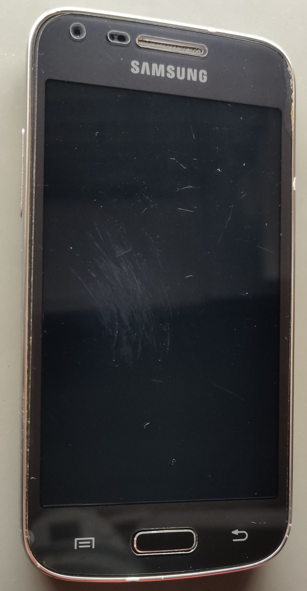

Samsung Galaxy Core Plus (samsung-cs02)
Jump to navigation
Jump to search
|  | |
| Manufacturer | Samsung |
|---|---|
| Name | Galaxy Core Plus |
| Codename | samsung-cs02 |
| Released | 2013 |
| Category | testing |
| Original software | Android |
| Original version | 4.2.2 |
| postmarketOS kernel | 3.4.5 |
| Hardware | |
| Chipset | Broadcom BCM21664T |
| CPU | 2x 1.2 GHz Cortex-A9 |
| GPU | VideoCore IV |
| Display | 480x800 (217dpi) |
| Storage | 4 GB |
| Memory | 768 MB |
| Architecture | armv7 |
{kind=link}
| USB Networking |
Works
|
|---|---|
| Flashing |
Works
|
| Touchscreen |
Works
|
| Display |
Works
|
| WiFi |
Works
|
| FDE | |
| Mainline |
Partial
|
| Battery |
Works
|
| 3D Acceleration | |
| Audio |
Partial
|
| Bluetooth | |
| Camera | |
| GPS | |
| Mobile data |
Broken
|
| SMS |
Broken
|
| Calls |
Broken
|
| USB OTG | |
| NFC | |
| Accelerometer |
Works
|
|---|---|
| Magnetometer | |
| Ambient Light | |
| Proximity | |
| Hall Effect | |
| Barometer | |
| Power Sensor | |
| Camera Flash | |
|---|---|
| Keyboard | |
| Touchpad | |
| USB-A | |
| HDMI/DP | |
| Ir TX | |
| Ir RX | |
| Stylus | |
| Haptics | |
| Ethernet | |
| FOSS bootloader | |
Samsung Galaxy Core Plus G3500 (Broadcom variant)
Contributors
- Santeri3700
Maintainer(s)
- Santeri3700
Users owning this device
- Santeri3700 (Notes: x2, pmOS WIP)
What works
- Screen
- Audio* (more information below)
- USB Network
- Wifi*
- Touch (
/dev/input/event4) - Proximity sensor (
/dev/input/event0)- enable with
echo 1 > /sys/class/input/input0/enable
- enable with
- Accelerometer (
/dev/input/event1)- enable with
echo 1 > /sys/class/input/input1/enable
- enable with
- Compass (
/dev/input/event2)- enable with
echo 1 > /sys/class/input/input2/enable
- enable with
What does not work
- Setting up wifi using NetworkManager GUI/applet. (nm-applet never asks for the PSK, manually setting the password works and nmtui works too)
- Everything else
Audio
Audio works partially and only with Alsa. PulseAudio doesn't seem to work even when changing the sample rate to 48KHz.
- Playback only work with with the sample rate of 48KHz. Anything else than 48KHz results in silence or or crackling (and the logs say "underrun!!!")
- Recording works only with the sample rate of 48KHz and mono only.
Alsa record & playback test:
arecord -f dat -c 1 | aplay -f S16_LE -r 48000 -c 1
Misc
- CMDLINE:
console=ttyS2,115200n8 mem=738M cma0=0M carveout0=0M vmalloc=136M androidboot.console=ttyS2 logbuf_nocache=1 sec_debug.reset_reason=0x1A2B3C00 sec_debug.level=0 androidboot.debug_level=0x4f4c loglevel=0 sec_log=0x70000@0xae900000 bootloaderfb=0xae980000,0x180000 lpcharge=0 cordon=xxxxxxxxxxxxxxxxxxxxxxxxxxxxxxxx androidboot.emmc_checksum=3 brd_ver=2 androidboot.serialno=xxxxxxxxxxxxxxxx - Both 150kΩ and 619kΩ resistors work for a serial debug cable.
Bootloader / S-Boot 4.0
To abort auto-boot, press Enter while the phone is powered on. You will need a serial debug cable to be connected before powering on.
Use command help to get started and use command log to print the output log if commands don't print output immediately.
More instructions about the log level and debug printing can be found below.
Version: Samsung S-Boot 4.0-2930239 for SM-G350 (Jul 4 2016 - 11:58:36)
Default printenv
: REBOOT_MODE: 0 : SWITCH_SEL: 1 : DEBUG_LEVEL: 20300 : KERNEL_LOG_LEVEL: 17484 : SUD_MODE: 0 : DN_ERROR: 0 : CHECKSUM: 3 : INT_RSVD6: 0 : INT_RSVD7: 0 : INT_RSVD8: 0 : INT_RSVD9: 0 : CMDLINE: console=ttyS2,115200n8 mem=738M cma0=0M carveout0=0M vmalloc=136M androidboot.console=ttyS2 logbuf_nocache=1 : STR_RSVD1: (null) : STR_RSVD2: (null)
How to enable S-Boot & Kernel debug output (persistent)
S-BOOT # setenv KERNEL_LOG_LEVEL 17740 argv[0]: setenv argv[1]: KERNEL_LOG_LEVEL argv[2]: 17740 S-BOOT # printenv : REBOOT_MODE: 0 : SWITCH_SEL: 1 : DEBUG_LEVEL: 20300 : KERNEL_LOG_LEVEL: 17740 <--- New log level appears here : SUD_MODE: 0 : DN_ERROR: 0 : CHECKSUM: 3 : INT_RSVD6: 0 : INT_RSVD7: 0 : INT_RSVD8: 0 : INT_RSVD9: 0 : CMDLINE: console=ttyS2,115200n8 mem=738M cma0=0M carveout0=0M vmalloc=136M androidboot.console=ttyS2 logbuf_nocache=1 : STR_RSVD1: (null) : STR_RSVD2: (null) S-BOOT # saveenv S-BOOT # reset
Hardware
| WIFI/Bluetooth/FM-Radio | Broadcom BCM4330LB2KUBG |
| NFC | Broadcom BCM2079(1b05) |
| PMU | Broadcom BCM59054A1IUB1G |
| Accelerometer & compass | Bosch BMC150 |
| Proximity sensor | Sharp GP2AP002 |
| Display | BOE BF050WVM-500-1HP0 (5.0" A-si TFT) |
| LCD Driver | Himax HX8369 (480x800) |
| Rear camera | Samsung S5K4ECGX (5.0MP) |
| Front camera | SR030PC50 (0.3MP) |
| Capacitive touch buttons sensor | Broadcom BCM20793MKML4G |
| Storage/EMMC | Samsung KMK5U000YM-B309 (4GB) |
| Platform | Hawaii (Broadcom) |
| Family | KONA (Broadcom) |
How to enter flash mode
- Press volume down and the home key, then press the power button.
- Maintain volume down and home pressed until a warning screen comes up
- Press volume up to confirm